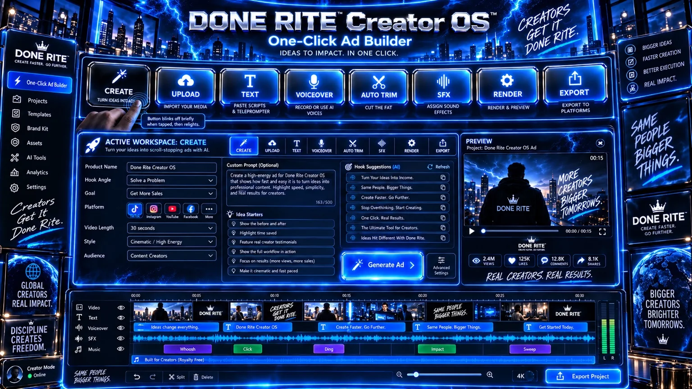

DONE RITE Creator OS One-Click Ad Builder

Choose what you want to do
Each button opens the matching part of your saved One-Click project.
Preparing your One-Click routes…

Each button opens the matching part of your saved One-Click project.